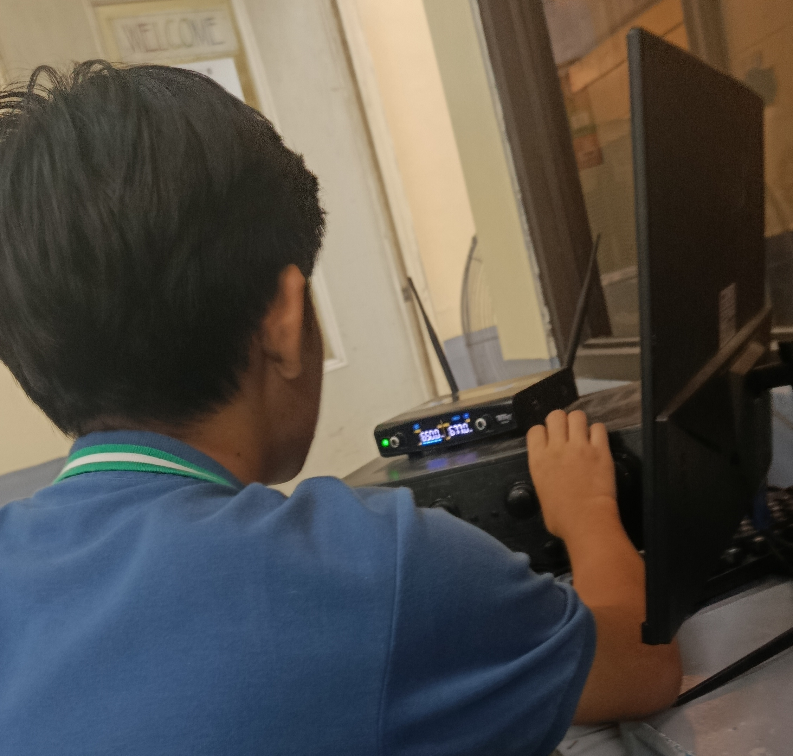
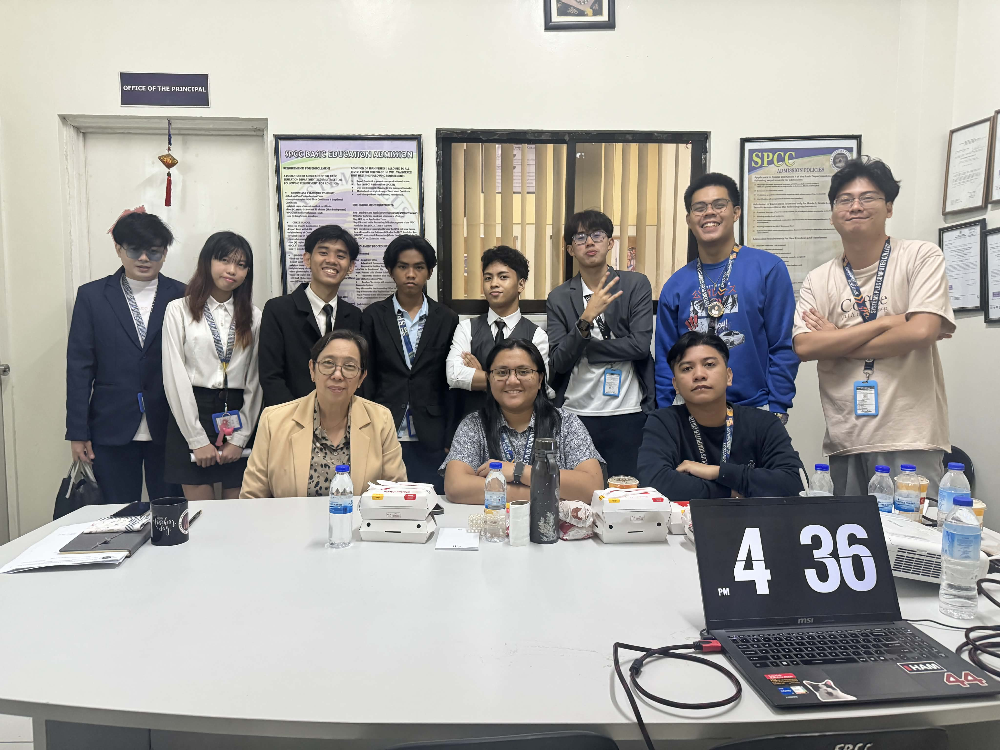
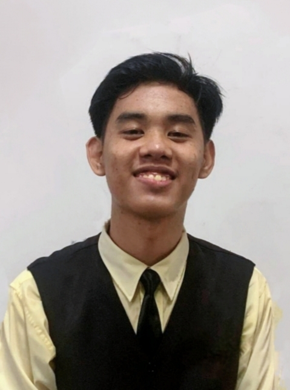

Memories

ICT x HUMSS WEEK

WORK IMMERSION

Hi I Am Zechariah Aquino of 12 ICT ZOOM
Formerly I am an a 11 VIBER student
What pushed me to pursue this strand is because i am fascinated in technology even when i was just a kid.
If i were to describe SHS i would say "Ephemeral"
"Be different stay GOATED"

One of the major i found fun was genereal mathematics and statistics and probability
The real challenge was waking up early because for the past couple years i was an afternoon class student
Also one of the hardest things was not having enough financially it made me and my friend hard for us to keep up with the others
With Honors, Most Handsome, Exemplary Behavior
Our Capstone 👌🏻
New skills learned: Web Development
Grade 11 taught me how to stand for me self, Made me stand for myself
• Capstone, was one of the toughest one because more than half of our group didn't care about making it, it took us 3 people to finish it. And ghe others only showed up during the defense 😭🙏🏻
• Work immersion, best times i was deployed in ITS (information Technology Services)
• ICT X HUMSS week
• Helped my old pal Kyle Palma leading our class
• Was a player of Tangram
• Looking back at Grade 11, I am doing alright-y right now
• One of the strengths I've developed is the bond with my friends
• Teamwork - back then i always hated group works because i hated interaction but now i broke that boundary
• Self-confidence - i gained the confidence to push interaction to my groupmates


• College - I've already taken exams in University Of Caloocan City (UCC) and Polytechnic University of the Philippines (PUP)
• Hopefully I'll get my course IT (Information Technology)
• I dream of a nice house and a cool desktop setup